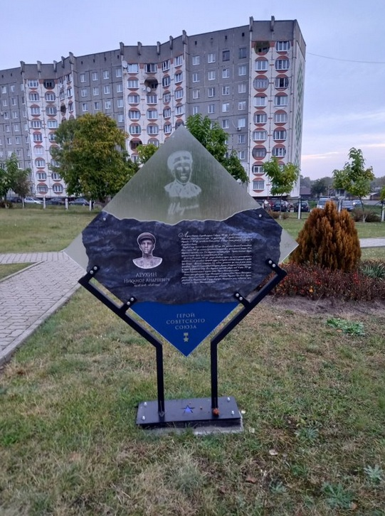
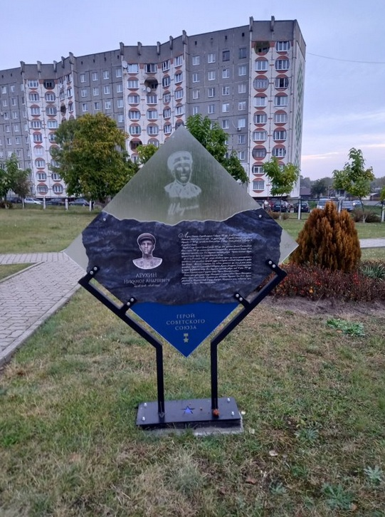

г. Светлогорска имени С. Л. Краснопёрова»
 

22 июля 1918 — 18 июня 1944
Место рождения: с. Антоново / Антоновка (Нижняя/Антоновка, Солотвинский район — региональные источники указывают на село Антоново/Нижняя Ненинка).
Леухин Никанор Андреевич (1918—1944) — участник Великой Отечественной войны, командир 76-мм орудия артбатареи 241-го гвардейского стрелкового полка 75-й гвардейской стрелковой дивизии 30-го стрелкового корпуса 60-й армии Центрального фронта, гвардии сержант, Герой Советского Союза (1943).
Родился 4 августа 1918 года в селе Нижняя Ненинка ныне Солтонского района Алтайского края (по другим данным — в деревне Антоново Масканурского сельсовета Новоторъяльского района Республики Марий Эл. С 1921 года на Алтае). Жил в селе Верхняя Неня, работал в колхозе, в сельпо, затем на хлебозаводе в Кемеровской области.
Призван в Красную Армию в октябре 1939 года.
На фронтах Великой Отечественной войны — с марта 1943 года в должности командира 76-мм орудия артиллерийской батареи 241-го гвардейского стрелкового полка 75-й гвардейской стрелковой дивизии.
Участвовал в Курской битве в районе Поныри — Ольховатка, сначала отражая немецкое наступление, а затем участвуя в разгроме и преследовании противника в ходе Орловской наступательной операции. За боевые действия на Курской дуге, образцовое выполнение боевых заданий и проявленные при этом мужество и героизм Леухин Н. А. награждён орденом Красной Звезды.
Указом Президиума Верховного Совета СССР от 17 октября 1943 года за успешное форсировании реки Днепр севернее Киева, прочное закрепление плацдарма на западном берегу реки Днепр и проявленные при этом мужество и геройство гвардии сержанту Леухину Никанору Андреевичу присвоено звание Героя Советского Союза с вручением ордена Ленина и медали «Золотая Звезда».
Указом Президиума Верховного Совета СССР от 17 октября 1943 года за успешное форсировании реки Днепр севернее Киева, прочное закрепление плацдарма на западном берегу реки Днепр и проявленные при этом мужество и геройство гвардии сержанту Леухину Никанору Андреевичу присвоено звание Героя Советского Союза с вручением ордена Ленина и медали «Золотая Звезда».